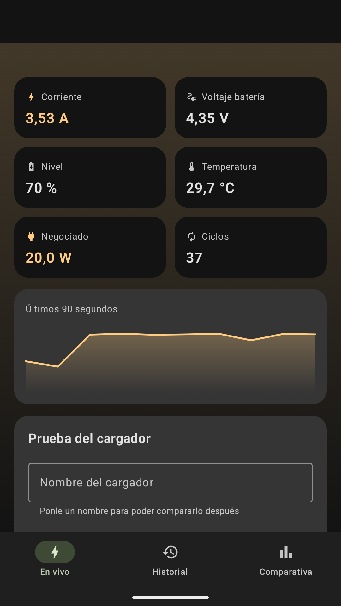
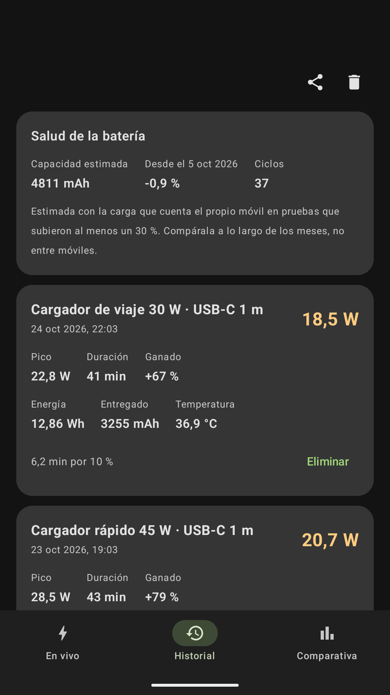
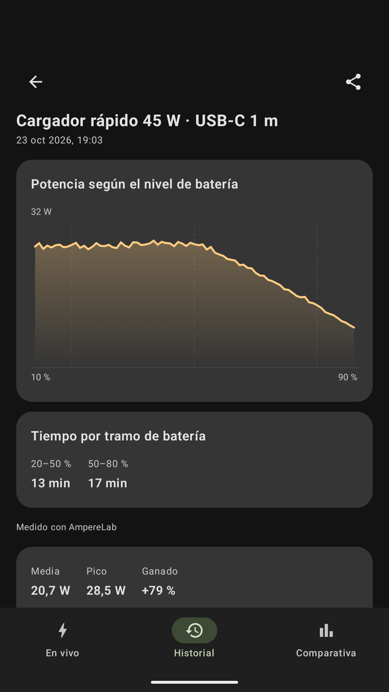
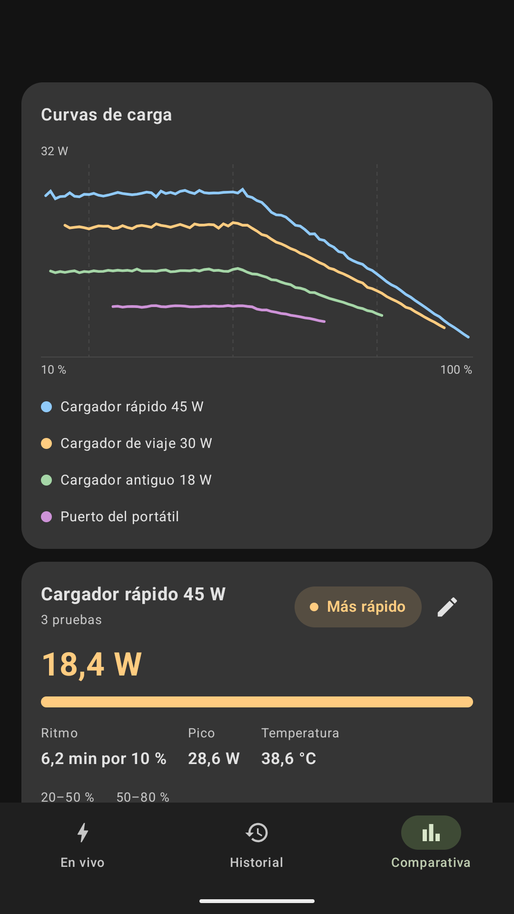

Mide los vatios reales de carga.
Compara todos tus cargadores.
Android dice «Cargando» en cuanto enchufas un cable, incluso si la batería está bajando. AmpereLab mide la potencia neta real que entra en la celda y clasifica tus cargadores con pruebas objetivas.


Potencia neta con signo
Vatios reales (+ o -) que entran o salen de la batería.
Pantalla apagada
Mide toda la noche de forma segura gracias a su servicio en primer plano.
Exclusión de pausas
La carga adaptativa o el límite al 80 % nunca arruinan tus medias.
100 % Privada
Sin anuncios, sin analíticas y sin permiso de Internet.
Diseñada para entender cómo carga tu teléfono
Deja de dudar si ese cable viejo está estrangulando tu cargador rápido. Obtén diagnósticos claros en segundos.
Telemetría en tiempo real y medidor radial
Observa cómo suben y bajan los vatios mientras tu móvil negocia los protocolos USB-PD. Registra voltaje (V), corriente (A), temperatura (°C) y energía acumulada en vatios-hora (Wh) con la regla del trapecio.
Ranking objetivo de cargadores
Compara cada cargador que tienes por su ritmo real: minutos necesarios para subir un 10 % de batería y potencia media ponderada.
Pruebas nocturnas seguras
Ponle nombre al cargador, pulsa iniciar y bloquea el teléfono. El servicio en primer plano mide sin calentar la pantalla.

Widget, botón rápido y exportación a CSV
Consulta los vatios al instante desde tu pantalla de inicio o ajustes rápidos con diseño Material You. Exporta todas tus pruebas a formato CSV con un solo toque.

Por qué otras apps muestran datos erróneos
El sistema operativo marca «Cargando» siempre que detecta 5 voltios, incluso si el móvil pierde batería. AmpereLab identifica cuatro estados físicos reales:
| Estado | Umbral | Qué significa realmente |
|---|---|---|
| ● Cargando | > 0,5 W entrando en la batería | La energía entra activamente en la celda. El medidor radial animado refleja el flujo instantáneo. |
| ● Carga en pausa | Conectado, ~0 W netos | Carga adaptativa nocturna, corte térmico o límite del 80 % activo. Se separa de la media para no arruinar tus pruebas. |
| ● Perdiendo carga | Vatios negativos enchufado | El móvil gasta más energía de la que el cargador puede suministrar. Común con GPS en el coche o cables dañados. |
| ● Batería llena | 100 % alcanzado | Régimen de mantenimiento. La batería está completamente cargada. |
👉 ¿Cómo me podéis echar un cable en 30 segundos? (2 pasos)
La aplicación está en fase de prueba cerrada en Google Play. Solo necesitas seguir estos dos pasos rápidos para instalarla:
Unirse al grupo de acceso
Pulsa en el enlace y haz clic en el botón superior de «Unirse al grupo» (solo te tomará 1 clic).
Descargar desde Google Play
Una vez dentro del grupo, Google Play te reconocerá como tester autorizado de forma automática.
Novedades de las versiones
Evolución continua y mejoras añadidas en cada lanzamiento de AmpereLab.
- La app avisa cuando hay una versión nueva en Google Play y ofrece instalarla tras descargarla en segundo plano.
- Nuevos idiomas: alemán, francés, italiano y portugués de Brasil.
- Capacidad nominal de la batería editable a mano cuando el modelo no está en el catálogo oficial.
- Diagnóstico completo de sensores: lecturas crudas y calibración de polaridad listas para copiar o compartir.
- Detección de unidades más fiable en dispositivos de otros fabricantes que no son Google Pixel.
- Reducción del consumo de CPU en reposo durante mediciones prolongadas.
- Nueva pantalla de ajustes con selector de tema, umbrales y opciones avanzadas.
- Visor de cambios y novedades integrado en la propia aplicación.
- Copia de seguridad local y restauración completa de pruebas y configuraciones sin nube.
- Edición de sesiones, nombres de cargadores y etiquetas de cables personalizados.
- Filtros avanzados por fecha y tipo de cargador en el historial.
- Función de deshacer borrado al eliminar mediciones.
Preguntas Frecuentes
¿AmpereLab requiere root o comandos ADB?
¿Consume batería mientras mide?
¿Por qué varían los vatios mientras carga?
¿Mis datos están seguros y privados?
INTERNET en Android. Sin publicidad, sin rastreadores ni sincronización en servidores remotos.
¿Listo para poner a prueba tus cargadores?
Únete a la beta de AmpereLab hoy mismo y descubre qué cables y cargadores rinden de verdad a máxima velocidad.